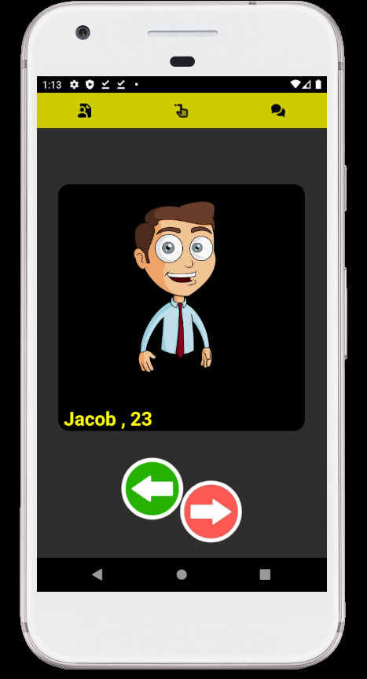

Welcome to my portfolio
Space Chat App Go to github(My code)... Description: A space themed chat app using Google's Firebase built with Android Studio Functions: Send messages and images to other users on the app, edit your profile and cover image, search for other users on the app and be notified when message is read and a response was made
LeftSwipezz Dating App  Go to github(My code)... Description: A dating app where you swiple left to match and right to deny. Built with Firebase Functions: Send messages and images to your matches on the app, edit your profile and preferences, use swipe fuctions to match and deny.Get notified when a match was made
BMI Calculator App Go to github(My code)... Description: A bmi calculator bulit using Flutter and dart Functions: calculate your bmi according to your height, age, weight and sex.
Global Coronavirus Traker Go to github(My code)... Description: A cornavirus traker created using flutter and dart. Built with the covid19 api Functions: Keep track of cases, recoveries and deaths around the whole world.
Weather app Go to github(My code)... Description: A weather app bulit using Flutter and dart using the open weather api Functions: find the weather from anywhere in the world or use your current location.
To-do app Go to github(My code)... Description: A to-do app bulit using Flutter and dart, using stack managment Functions: add and remove tasks
Easy Chat Go to github(My code)... Description: A chatroom app bulit using Flutter and dart using Google's Firebase Functions: Create an account and speak with anyone on the app
Description: A game engine created completey from scratch using java and opengl
Functions: This engine currently features model importation. Texture rendering on 3d models. A camera. Point lights, and reflective lights that come off of models. And last but not least terrain generation.
Go to github(My code)...
Description: A face recognition project that uses python and the cv2. face-recognition libraries.
Functions: recognise a face from an image or a video. Blur said face in the image or video. Add a filter to the face live through webcam.
Go to github(My code)...